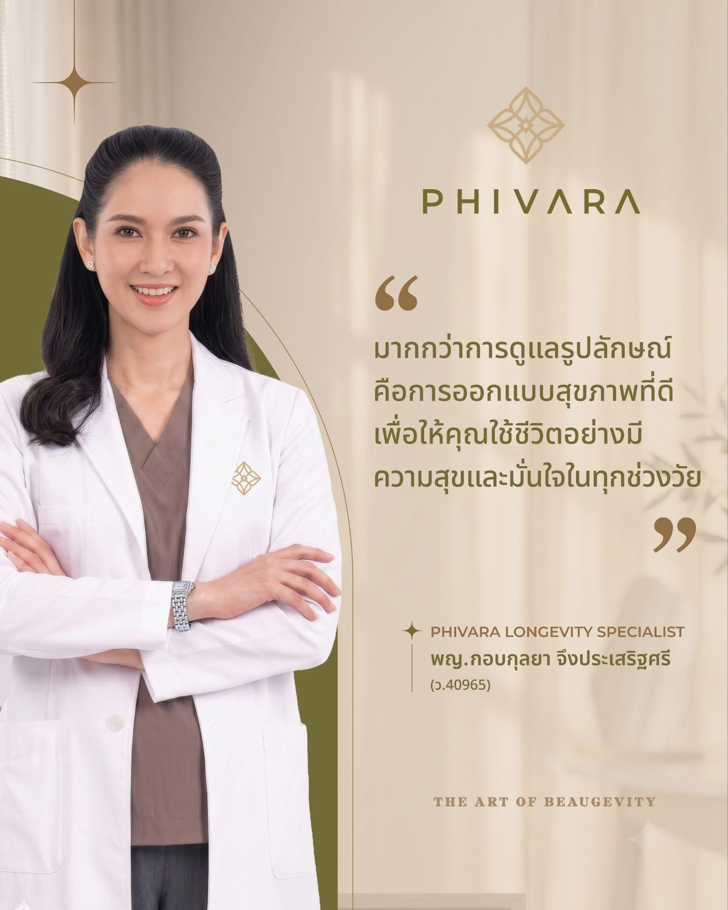
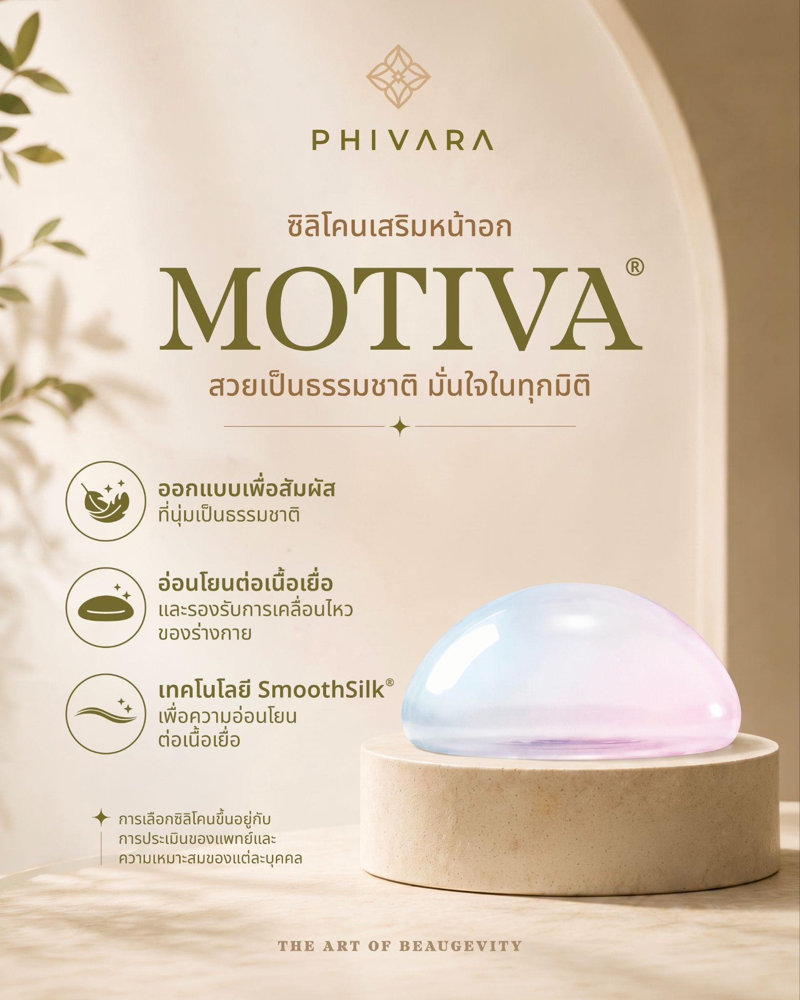
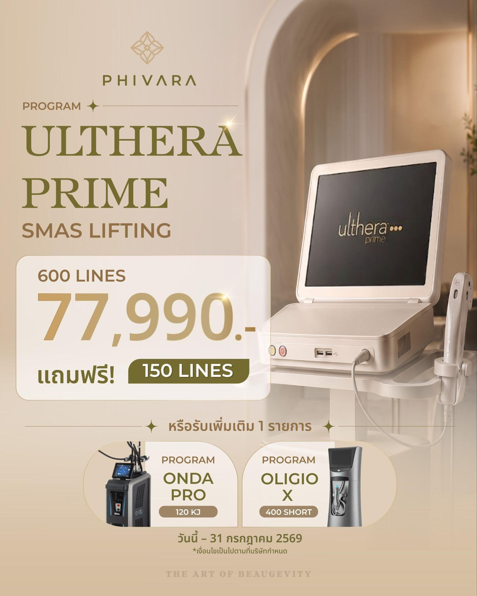
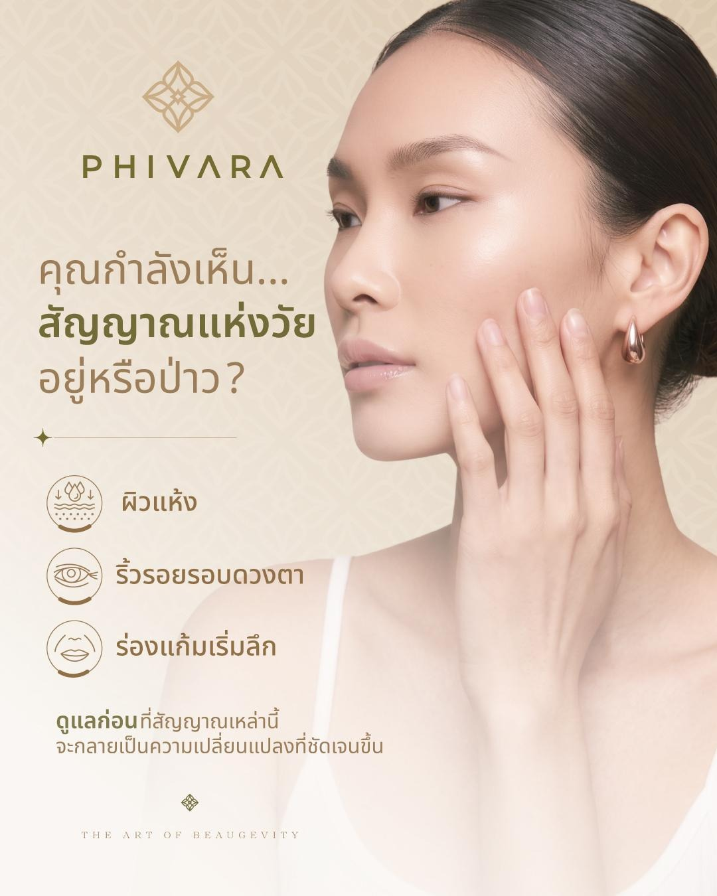

Organic Core Engine
JUL–DEC 2026 · SOFT LAUNCH 10 SEP- Facebook + Instagram Organic
- TikTok Short-form Content
- LINE Official Account + CRM Tags
- Website TH / EN + SEO/AEO Foundation + Tracking
แผนสร้างการเติบโตผ่าน Trust, Digital Experience
และความสัมพันธ์ระยะยาวในช่วง 6–12 เดือนหลังเปิดตัว
DIGITAL STRATEGY ROADMAP
DIGITAL ECOSYSTEM
Website, LINE OA, CRM Tags และ Tracking เป็น Core System · Organic Social ใช้สะสม Audience และ First-party Signals
Website สร้าง Trust · LINE OA เก็บ Contact, Tag Interest และ Booking
Paid Ads, Google Search, SEO/AEO Growth และ KOL ขยาย Organic Winner
Organic Demand · Credibility Hub · SEO/AEO Foundation · Tracking · CRM
PHASE 1 CHANNELS
Trust, Reviews และ Community สำหรับกลุ่ม 30+
Premium Perception สำหรับ Affluent และ High-end
Discovery ผ่าน Short-form Education ใน Phase 1
PHASE 1 CHANNELS · WEBSITE
พิสูจน์ Hospital-grade Trust
Booking ≤ 3 Steps
SEO/AEO Foundation
CONTENT STRATEGY · 4 PILLARS & ARTWORK

แนะนำแพทย์ ความเชี่ยวชาญ และแนวคิดการออกแบบเฉพาะบุคคล

อธิบาย Highlight Treatment ผลลัพธ์ และความเหมาะสมอย่างเข้าใจง่าย

โปรโมชันศัลยกรรม เครื่องยกกระชับ และโปรแกรมสุขภาพ

เชื่อม Beauty, Healthy Aging, การนอน ความเครียด และสุขภาพภายใน
CONTENT OPERATING MODEL
จังหวะการเผยแพร่: FB 4–5 ชิ้น/สัปดาห์ · IG 3–4 · Reels 2–3 · LINE 2–3 ครั้ง/สัปดาห์
Publish → Measure → Learn → Refine — ใช้ Engagement, Save, Share และ Chat Intent หาเรื่องและ Format ที่ควรทำซ้ำ
55% Awareness / 45% Conversion — สร้างการรับรู้ควบคู่การนัดหมาย และส่งทุก Conversion Post ไป LINE OA
ระบบควบคุมคุณภาพ: Foundation Shoot + Template กลาง พร้อมตรวจทานด้านการแพทย์และกฎหมายก่อนเผยแพร่
SEASONAL & EXAMPLE CALENDAR
Paid Media · SEO/AEO Growth · CRM Automation · KOL/Earned Media
PHASE 2 · ACTION PLAN OVERVIEW
PHASE 2 · SEARCH & ANSWER STRATEGY
เพิ่ม Organic Visibility ผ่านโครงสร้าง เนื้อหา และ Authority
ทำให้ AI เข้าใจและอ้างอิงผ่าน Expert Answer, FAQ และ Schema
จับคำค้น High Intent แล้วส่งสู่ Landing Page ที่ตรงกับความต้องการ
Site Structure · Doctor/Program Pages · Landing Pages · Tracking · Core Schema
สร้าง Organic และ Paid Search Foundation ให้พร้อม แต่ยังไม่เร่ง Content หรือใช้งบก่อนมี Search Signal และ Conversion ProofSEO/AEO Content Clusters · Google Search Campaigns · Internal Links
ใช้ Search Terms, Chat และ Conversion Data เลือกหัวข้อและคำค้นที่ควรลงทุน เพื่อสร้าง Authority พร้อมจับ Demand ที่มี Intent สูงPHASE 2 · PAID MEDIA FUNNEL & OBJECTIVES
สร้าง Mental Availability และ Retargeting Pool
CPM · VTR · Reachอุ่น Audience และส่ง Researcher เข้าสู่ Program Page
CPC · Landing Rateเปิดเมื่อมี Warm Pool และ Tracking พร้อม
CPL · Cost / Bookingสื่อสารกับ Customer โดยแยกออกจาก Prospecting
Repeat · ROASPHASE 2 · GOOGLE ADS STRATEGY
รองรับคำค้น PHIVARA · ชื่อแพทย์ · สาขา และพาไปหน้าจองที่ตรงความต้องการ
Impression Share · Bookingรองรับคำค้น Facelift · Eye · Ulthera · Wellness แล้วส่งไปหน้าโปรแกรมที่ตรงกัน
Qualified Lead · Cost / Bookingตอบคำค้นจากปัญหา เช่น หน้าหย่อน · Aging · Hormone Balance เพื่อแนะนำบริการ
Search Terms · Lead Qualityรองรับคำค้นคลินิก · แพทย์ · Near me และพาไปสาขาหรือช่องทางติดต่อ
Calls · Directions · Bookingเริ่มด้วย Exact + Phrase และแยก Ad Group ตาม Intent; เปิด PMax เมื่อมี Qualified Conversion Data เพียงพอ
คำค้น → Ad Copy → Program Page ต้องเป็นเรื่องเดียวกัน พร้อม Doctor, Proof และ Booking ภายใน 3 ขั้นตอน
Booked Consultation เป็น Primary Conversion; LINE Click และ Call เป็น Micro Conversion พร้อม Offline Import
PHASE 2 · FACEBOOK ADS STRATEGY
เข้าถึงกลุ่มใหม่อายุ 35+ ในรัศมีบริการ และใช้ Creative Signals หา Demand ที่มีคุณภาพ
Reach · CPM · VTRสะสม Warm Audience จากผู้ชมวิดีโอ 50% และผู้ Engage กับ Facebook / Instagram ใน 30 วัน
CTR · Landing Page ViewRetarget ผู้ชมหน้า Program ผู้กด LINE และผู้ที่สนใจแต่ยังไม่จอง ให้เข้าสู่ Consultation
Qualified Lead · Bookingใช้ฐาน CRM ที่ได้รับ Consent และ Lookalike จาก Booker / High-value เพื่อรักษาและขยายคุณภาพ
Repeat · Lead QualityDoctor Authority · Education · Brand Experience · Consultation CTA — ทำเป็น 9:16, 4:5 และ 1:1
Cold เห็น Brand / Education ก่อน ส่วน Warm และ High Intent จึงเห็น Program, Proof และ CTA นัดหมาย
Exclude Customers จาก Prospecting, Exclude Bookers จาก Lead Ads และไม่ใช้ Before / After ใน Paid
FINAL RECOMMENDATION
เริ่ม Soft Launch 10 Sep 2026 และสะสมฐานลูกค้าออนไลน์ผ่าน Organic Social, Website, LINE OA และ CRM ตลอด Jul–Dec
Grand Opening ต้นปี 2027 พร้อมเริ่มซื้อ Ads อย่างเต็มระบบ ทั้ง Meta, Google Search และ LINE Ads โดยใช้ข้อมูลจาก Phase 1
ใช้ Organic Winner, Search Signal, Tracking และ CRM จาก Phase 1 เป็นฐานจัดงบและ Optimize การเติบโตใน Phase 2
Beauty · Health · Vitality